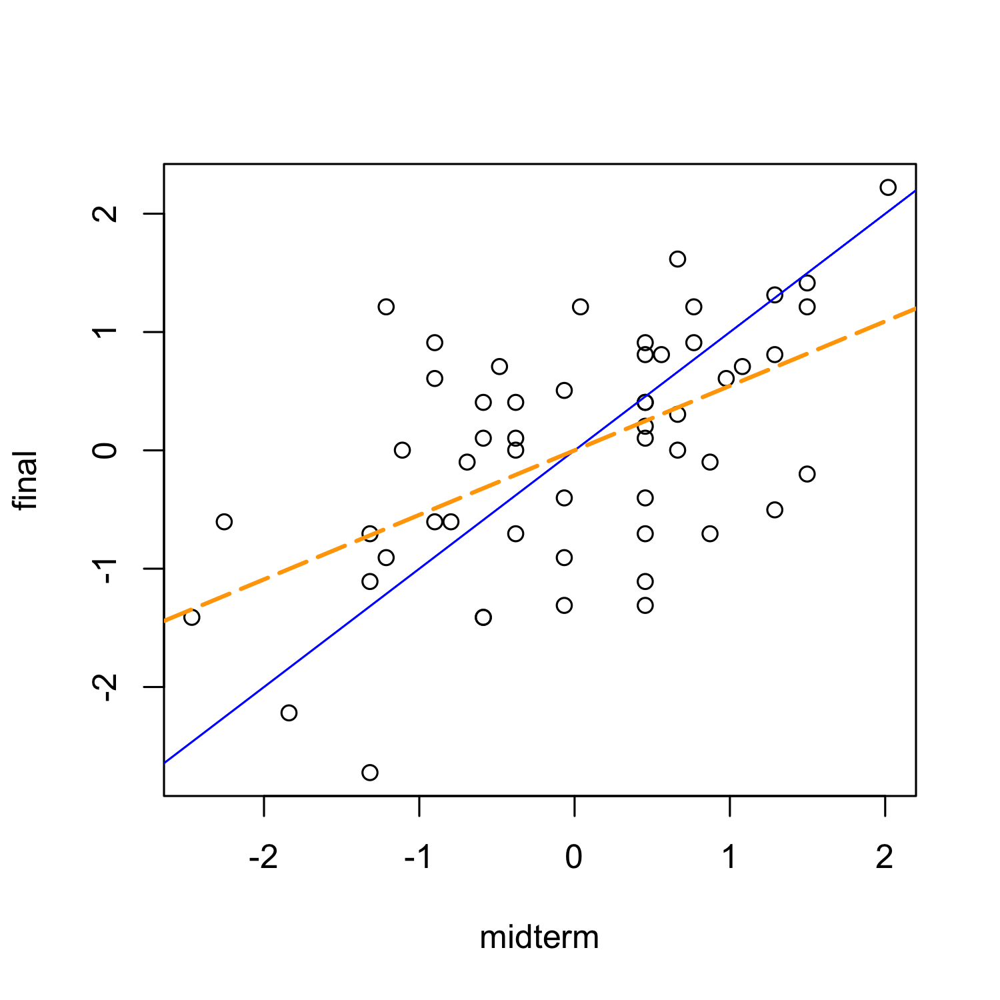
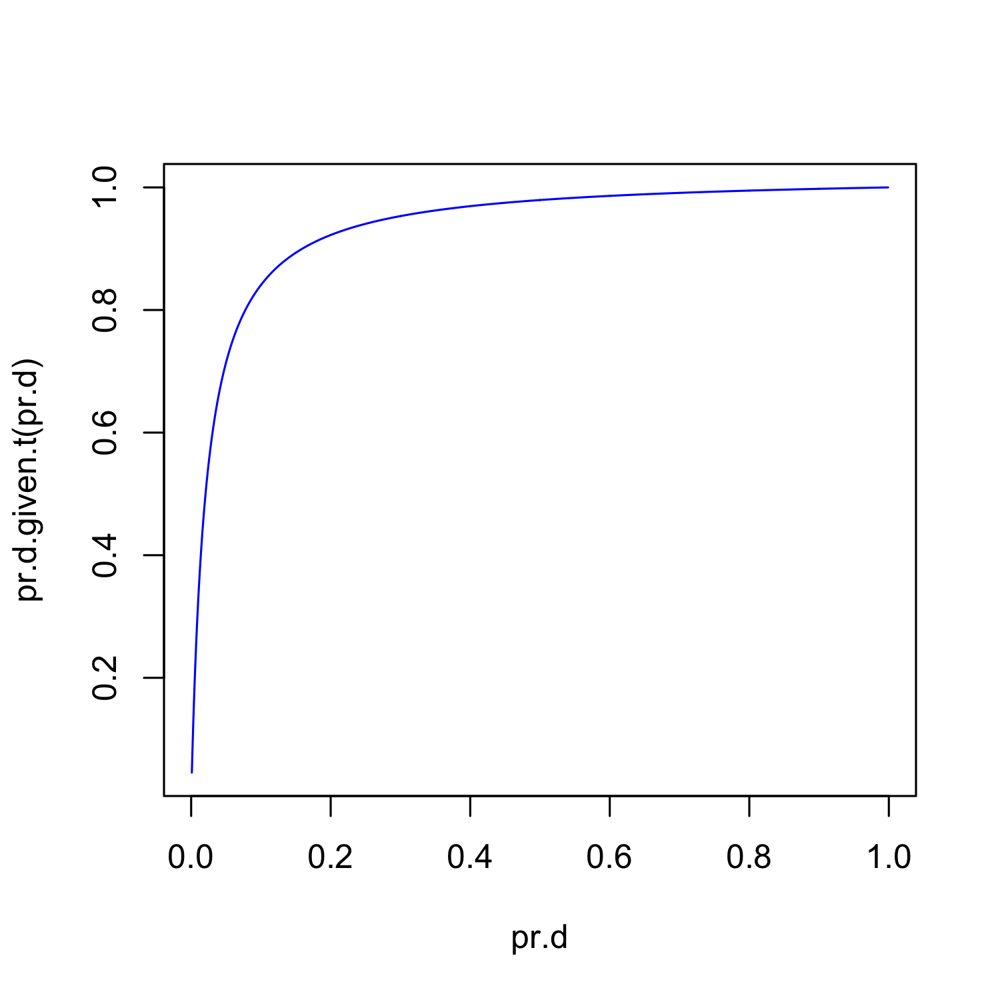
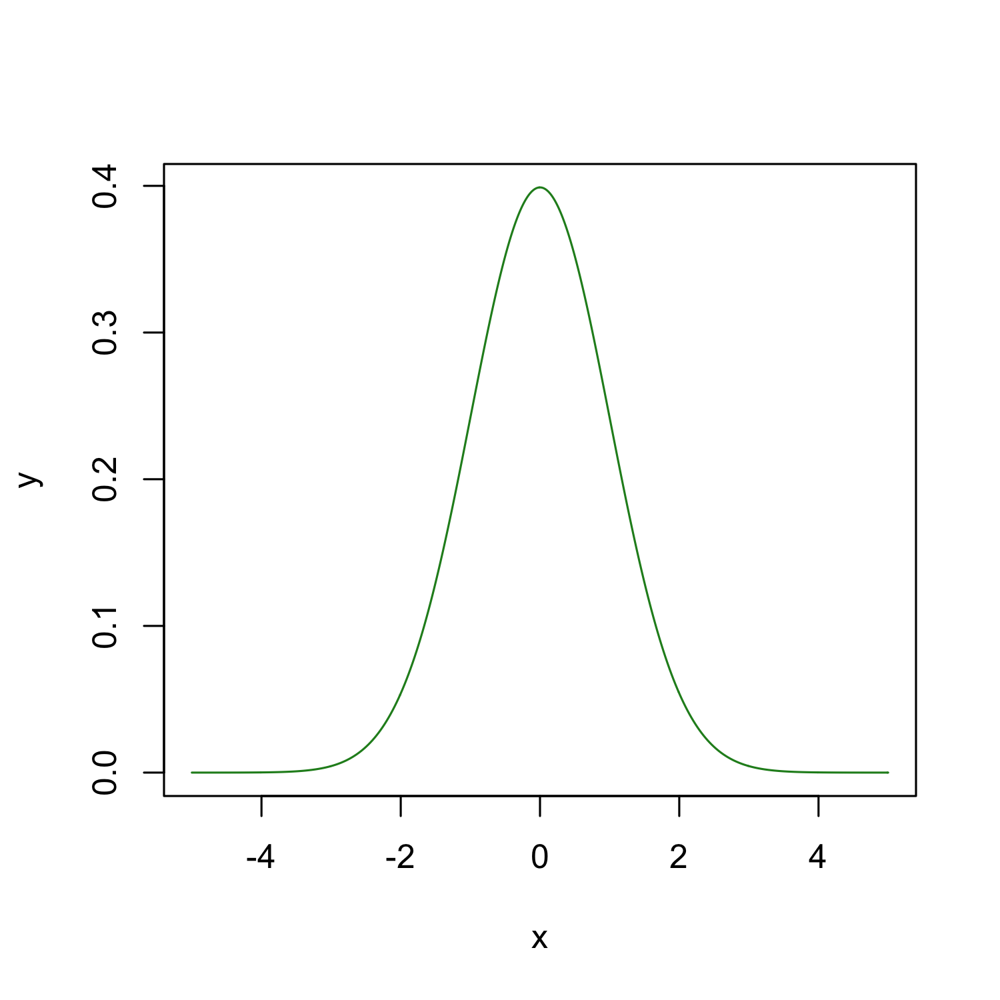
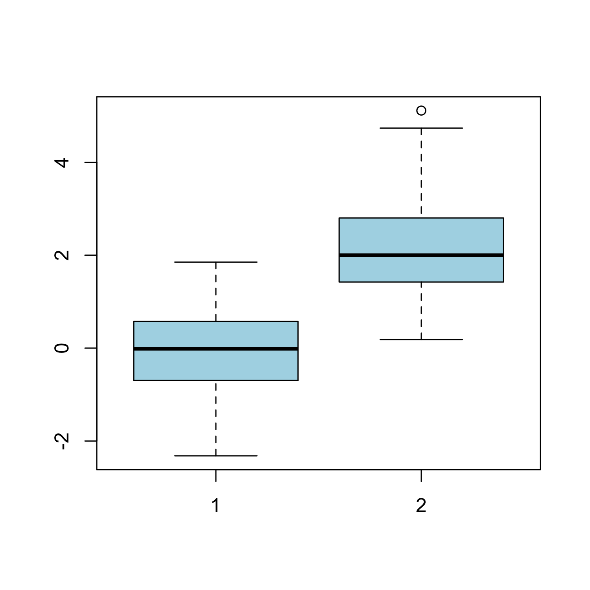
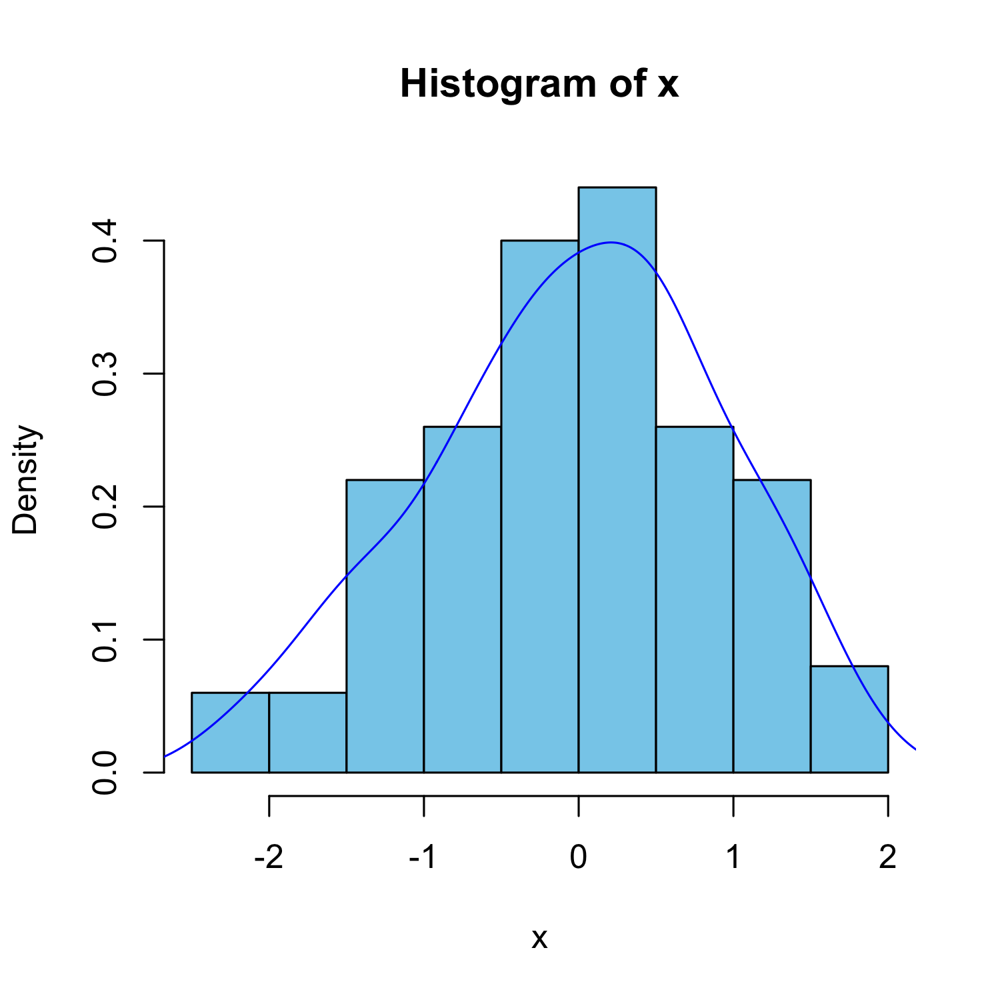
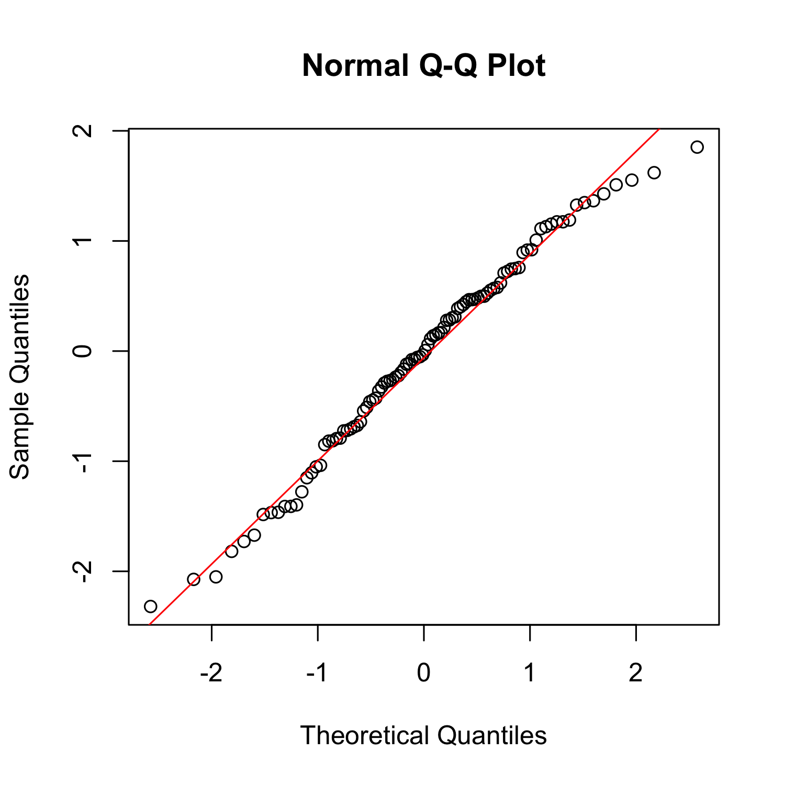

Introduction to R and Biostatistics
Nov 9, 2012
Welcome to the Genomics sciences =)
They are very diverse!
- Main branches
- Molecular biology
- Biochemistry
- Mathematics
- Computing
- Close to the core:
- Immunology, developmental biology, phylogenetics, …
- Wide variety of model organisms
- Bacteria, plants, higher eurakyotes, communities, …
Who are we?
LCG’s main focus is in developing researchers.
- From the wet biologist to the do-it-all to the more mathematical side
- But not any kind. The program trains you to understand a wide gamma of languages.
- Understand enough to communicate. That’s it!
- Then you specialize in something.
- You might start in your 4th year or a bit earlier.
What defines a researcher?
- We use the scientific method.
- Thus we observe a phenomenon, make hypothesis, gather data, and test them.
- We aim to be objective!
- Can we really ignore our prejudices and inner subjectivity?
- We also have to be able to communicate our ideas to others. Or try to.
Statistics and philosophy
Statistics
Richard Royall, Statistical Evidence, 1997
Science looks to statistics for help in interpreting data.
Statistics is supposed to provide objective methods for representic scientific data as evidence and for measuring the strength of that evidence.
Statistics serves science in other ways as well, contributing to both efficiency and objectivity through theories for the design of experiments and decision-making, for example.
But its most important task is to provide objective quantitative alternatives to personal judgement for integrating the evidence produced by experiments and observational studies.
Useful scenario (Royall, 1997)
There is a disease that you are interested in and you have a single diagnostic test.
Lets say that you have two incompatible cases:
- In case A, a person has a disease (
 ).
).
- The probability that the test will be positive
 = 0.95") .
.
- Thus,
 = 0.05") .
.
- In case B, the person does not have the disease (
 ).
).
- The probability that the test will be positive is
 = 0.02") .
.
- Thus,
 = 0.98") .
.
- You apply the test to Juan, and it comes out positive. This is our observation.
Three questions
- What do I believe, now that I have this observation?
- What should I do, now that I have this observation?
- What does this observation tell me about case A versus case B? (How should I interpret this observation as evidence regarding A versus B?)
Three possible conclusions
- Juan probably does not have the disease.
- Juan should be treated for the disease.
- The test result is evidence that Juan has the disease.
Three interpretations
- Belief: Bayesian statistics.
- Decision: Decision theory that is linked to frequentist statistics.
- Evidence: Likelihood statistics.
Using Bayes theorem and the multiplication rule, we have:
 = \frac{ P(T^+ | D) P(D)}{ P(T^+ | D) P(D) + P(T^+ | D^c) P(D^c)}")
As  = 1 - P(D)") and substituting the values we assumed earlier, we get that
and substituting the values we assumed earlier, we get that
 = \frac{0.95 P(D)}{0.95 P(D)+ 0.02 (1 - P(D))}")
Therefore, our answer to question 1 depends on ") , which we call the prior probability.
, which we call the prior probability.
So you can think of as the combination of all prior knowledge and your beliefs, and ") as your new (updated) beliefs after observing the data. In this case, after seeing Juan get a positive test.
as your new (updated) beliefs after observing the data. In this case, after seeing Juan get a positive test.
What about question 2?
We need to know the possible actions that we can take and their risks (consequences).
For example, if the treatment is harmless, inexpensive and not treating a sick person leads to terrible consequences, then we will go for it and treat Juan.
So we need other information.
Question 3.
The idea behind determining the evidence and it’s measure of strength is so that you may use it along with other information you may have to do what you think is best.
Conclusions
As you can see, there are three main divisions of statistical thinking.
But you don’t have to choose a side. Use what is out there if you are clear about what you are asking and the methods you use are compatible.
The wrong thing to do is to claim something when what you used doesn’t answer that question!
Purpose
- One of the reasons we use them is to try to uncover causes by studying relationships between variables.
- Although statistical relationships do not necessarily imply causal relationships, they do give us a starting point for further research.
Seber and Lee, Linear Regression Analysis, 2003
Basics
- We are interested in some variables, normally just one which we call the response.
- We want to study how it depends on a set of variables called explanatory variables.
- Example: risk of heart attack explained by blood pressure, age, gender, cholesterol level, etc.
Seber and Lee, Linear Regression Analysis, 2003
Exam grades example

Faraway, Linear Models with R, 2005
Uses
Once we have a statistical model we can
- use it for prediction.
- test hypothesis.
estimate parameters and give a measure of uncertainty.
As one of my professors said, 80% of statistics is linear models.
Why do I need statistics?
Are we observing something that could happen by chance?
That is a big question that we will ask ourselves very frequently.
In other words, are we observing something unexpected?
This is the problem of hypothesis testing with the null hypothesis being chance.
We have seen that you need statistics
To be objective
To estimate a parameter of interest and give a measure of uncertainty
To explain relationships between variables
To test your hypothesis
You will need biostatistics
Biostatistics is statistics applied to biological problems.
No matter what you do in science, you will need statistics at some point or another.
- How much? The basics.
- Takes around 2 semester-long courses to learn them (mostly frequentist)
- But I can collaborate with a statistician
- True, but it will be very hard to do so without a common language.
Why R?
- It’s free (open source)
- Available on Windows, Mac, Linux/Unix.
- Easily to customize and expand with libraries called packages
- A lot of people in academia use it!
- Great for reproducibility (more later)
Some cons
- It has a big learning curve
- No buttons which is a big difference if you are used to Excel…
- Can be very heterogeneous since lots of developers are working on different parts
RStudio
RStudio
I highly recommend it as your first R user interface.
It’s very friendly: menus, all the windows you want, highlighting, …
Once you learn to use RStudio you might want to try out other options which generally involve quite a bit of customization. Or you might be happy ever after with RStudio!
R code
You will notice some R code in the next slides followed by it’s output.
If you want to get the same results as me, just copy and paste them into R
Note that
# This symbol is used as a comment sign.
# Anything after will not be considered R code.
R is vectored
x <- 1
y <- c(1, 2, 3)
x + y
## [1] 2 3 4
z <- 1:3
y - z
## [1] 0 0 0
1:20
## [1] 1 2 3 4 5 6 7 8 9 10 11 12
## [13] 13 14 15 16 17 18 19 20
R as a calculator
Take Royall’s example from the beginning. We know that:
So, what is the if  = 0.001") ?
?
Well, lets use R as a calculator!
0.95 * 0.001/(0.95 * 0.001 + 0.02 * (1 -
0.001))
## [1] 0.04539
R as a programming language
We want more. We want to check if is greater when  = 0.001, 0.20,") or
or  .
.
To simplify things, we can write a function and check that it works:
pr.d.given.t <- function(pr.d) {
0.95 * pr.d/(0.95 * pr.d + 0.02 * (1 -
pr.d))
}
pr.d.given.t(0.001)
## [1] 0.04539
Now we can find the maximum one sequentially
pr.d.given.t(0.001) < pr.d.given.t(0.2)
## [1] TRUE
pr.d.given.t(0.001) < pr.d.given.t(0.5)
## [1] TRUE
pr.d.given.t(0.2) < pr.d.given.t(0.5)
## [1] TRUE
pr.d.given.t(0.5)
## [1] 0.9794
R as a graphics device
Not enough!
Lets look at for all possible values of
pr.d <- seq(0.001, 0.999, by = 0.001)
plot(pr.d, pr.d.given.t(pr.d), type = "l",
col = "blue")

Finding help
apropos("norm")
## [1] "dlnorm" "dnorm"
## [3] "halfnorm" "norm"
## [5] "normalizePath" "plnorm"
## [7] "pnorm" "qlnorm"
## [9] "qnorm" "qqnorm"
## [11] "qqnorm.default" "qqnorml"
## [13] "rlnorm" "rnorm"
`?`(pnorm)
args(rnorm)
## function (n, mean = 0, sd = 1)
## NULL
PDF
Let  be the random variable that has a Normal distribution with mean
be the random variable that has a Normal distribution with mean  and variance
and variance  . Then it’s probability density function (pdf) is given by the following equation:
. Then it’s probability density function (pdf) is given by the following equation:
 = \frac{1}{\sqrt{2\pi \sigma^2}} \exp \left( -\frac{(x - \mu)^2}{2 \sigma^2} \right)")
If ") then it’s density is:
then it’s density is:
 = \frac{1}{\sqrt{2\pi}} \exp \left(- \frac{z^2}{2} \right)")
Very famous and highly useful because of the Central Limit Theorem (check wiki and this useful applet).
Lets plot its density
x <- seq(-5, 5, by = 0.01)
args(dnorm)
## function (x, mean = 0, sd = 1, log = FALSE)
## NULL
y <- dnorm(x, 0, 1)
plot(x, y, type = "l", col = "forest green")

That was neat, because we know the parameters which describe the population.
But in reality, we only observe a sample. And from the sample, we get statistics such as the sample mean and sample variance.
Starting from a sample
First, lets generate two random samples.
args(rnorm)
## function (n, mean = 0, sd = 1)
## NULL
set.seed(101)
x <- rnorm(100)
set.seed(102)
y <- rnorm(100, 2)
Exploratory Data Analysis is the first step when working backwards.
It relies heavily on plots
Boxplot
boxplot(x, y, col = "light blue")

Histogram
hist(x, freq = FALSE, col = "skyblue")
With estimated density line
hist(x, freq = FALSE, col = "skyblue")
lines(density(x), col = "blue")

Overlaying two histograms
# Create histogram and density line for
# sample 1 (x)
hist(x, xlim = range(c(x, y)) * 1.2, ylim = c(0,
0.55), main = "Density plots of two samples",
xlab = "", density = 2, freq = FALSE,
border = "skyblue", col = "skyblue")
lines(density(x), col = "blue")
# Add histogram and density line for
# sample 2 (y)
hist(y, xlim = range(c(x, y)), ylim = c(0,
0.55), main = "", density = 2, freq = FALSE,
border = "pink", col = "pink", add = TRUE)
lines(density(y), col = "red")
# Add legend
legend("top", legend = c("x", "y"),
col=c("blue", "red"), lty=1, bty="n",
density = 20, border = c("skyblue", "pink"),
fill = c("skyblue", "pink"), cex=0.8)
# Example from my code a 140.776 exercise
qqnorm
qqnorm(x)
qqline(x, col = "red")

What does it mean?
- For some sciences, it means being able to replicate other’s work.
- You want this to be true, right? Otherwise no one will trust your results.
- In bioinformatics and biostatistics, we take reproducibility to a whole new level.
- Ideally, someone else can press a button and everything will run smoothly and produce the same exact results.
Reproducibility with R code
One way to promote reproducibility is using self-contained documents.
Meaning that they have code and words explaining the results all in one single place.
An example? Look at intro_R_Biostat_LCG_2012.Rmd
Normally, we use it to create PDF reports for ourselves and collaborators.
What is the problem?
Well, it normally involves learning and the Sweave.
These files can look very complicated and take quite a bit of practice before you can get comfortable using them.
knitr and markdown
Markdown
- It’s a very simple mark_up_ syntax
- In RStudio
- File > New > R Markdown
- Click on Markdown quick reference
knitr
- It can take Markdown files and export them to PDF or HTML files.
- Has a ton of customization options
- Works great with RStudio
- Greatly benefits from pandoc
What is the point?
You can learn how to use R with RStudio from the beginning and easily export your homeworks either in HTML or PDF format using knitr
Take a look at the same material in a webpage format here.
It’s always good to start with the best practices, specially if they are very simple
Thank you!
If you have questions, feel free to contact me!
sessionInfo()
## R version 2.15.1 (2012-06-22)
## Platform: x86_64-apple-darwin9.8.0/x86_64 (64-bit)
##
## locale:
## [1] C/en_US.UTF-8/C/C/C/C
##
## attached base packages:
## [1] stats graphics grDevices
## [4] utils datasets methods
## [7] base
##
## other attached packages:
## [1] faraway_1.0.5 knitr_0.8
##
## loaded via a namespace (and not attached):
## [1] digest_0.5.2 evaluate_0.4.2
## [3] formatR_0.6 plyr_1.7.1
## [5] stringr_0.6.1 tools_2.15.1